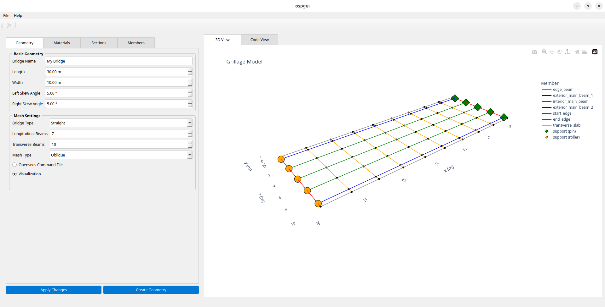
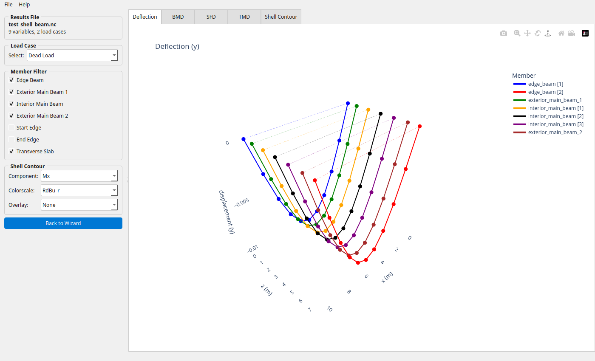
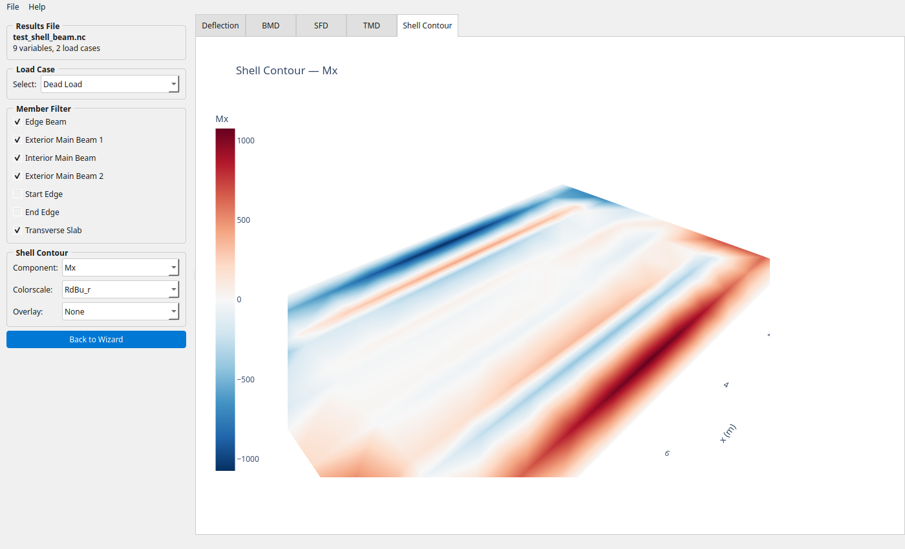
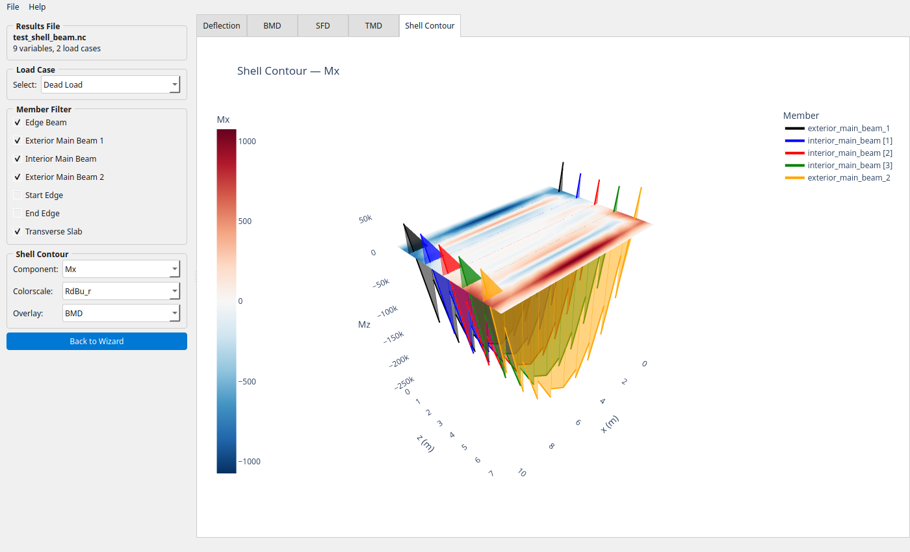

GUI#
The ospgui module provides a graphical interface for building ospgrillage bridge deck models interactively, without writing Python code.
Installation#
The GUI depends on PyQt6, which is an optional extra:
pip install "ospgrillage[gui]"
Launching#
From the command line:
ospgui
Or from within Python:
from ospgrillage.ospgui import main
main()
{kind=link}

Interface overview#
The window is divided into three panels:
Left — tabbed input forms for geometry, materials, sections, and members (provided by
BridgeInputWidget).Centre — a live code view showing the generated ospgrillage Python source, updated as parameters change.
Right — an interactive 3-D mesh preview rendered via Plotly (rotate, zoom, and pan the model).
Results viewer#
The GUI can open saved results files (.nc) for interactive
post-processing — no Python scripting required.
Opening results#
Use File > Open Results (.nc) (or Ctrl+O) to load a self-contained
NetCDF file produced by
get_results():
results = bridge.get_results(save_filename="bridge_results.nc")
The interface switches to a results view with five interactive tabs:
Tab |
Contents |
|---|---|
Deflection |
Vertical deflected shape |
BMD |
Bending moment diagram |
SFD |
Shear force diagram |
TMD |
Torsion moment diagram |
Shell Contour |
Shell element contour plot (shell_beam models only) |
A left-hand panel provides loadcase and member filter controls that apply to all tabs.
{kind=link}

Results viewer — Deflection tab showing the deflected shape of a shell-beam bridge under dead load.
Shell Contour tab#
For shell_beam models, the Shell Contour tab renders a
plot_srf() contour over the deck
slab. Three additional controls appear in the left panel:
Component — any of the 17 available components: shell forces (
Mx–Mz), displacements (Dx–Dz), or stress resultants (N11–Q23).Colorscale —
RdBu_r,Viridis,Plasma,Cividis, orTurbo.Overlay — optionally composite a beam diagram (
BMD,SFD,TMD, orDeflection) on top of the contour.
The contour controls are greyed out when viewing a non-contour tab and hidden entirely for non-shell models.
{kind=link}

Shell Contour tab — Mx bending moment with the RdBu_r diverging colorscale. Red indicates positive (sagging), blue negative (hogging).
The Overlay dropdown composites beam force diagrams on top of the shell contour for direct comparison:
{kind=link}

Shell Mx contour with a BMD overlay — beam bending moment diagrams rendered alongside the deck slab response.
API reference#
main()#
Launch the ospgui graphical interface.
Entry point for the ospgui console script. Checks that PyQt6 is available
and exits with a helpful message if not, otherwise starts the Qt application
and opens BridgeAnalysisGUI.
Raises: SystemExit — with code 1 if PyQt6 is not installed; with the Qt
application’s return code on normal exit.